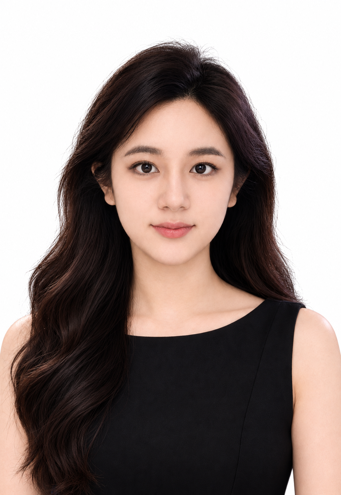
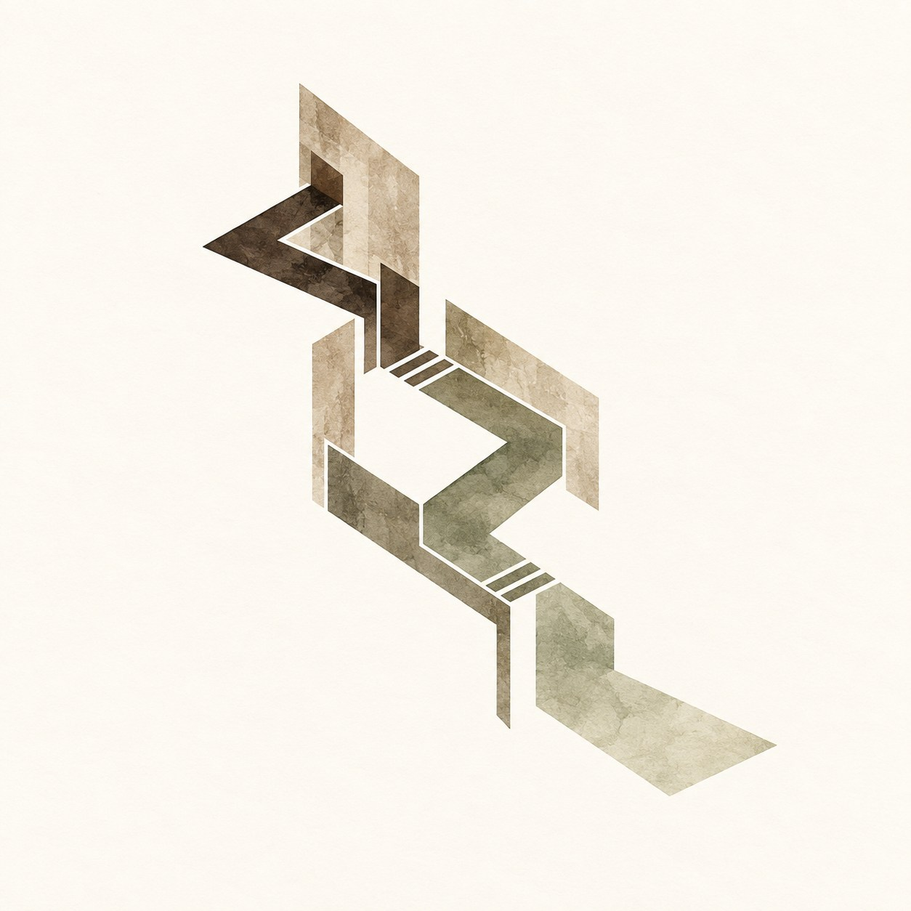
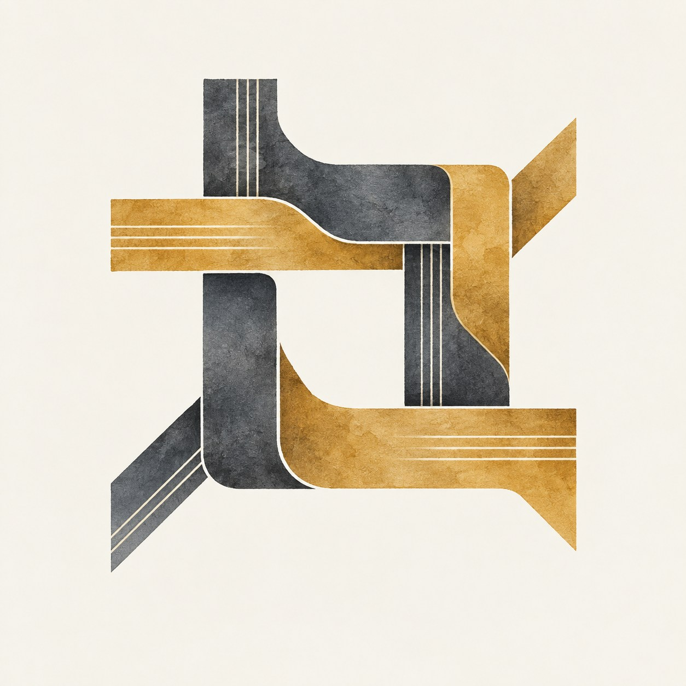
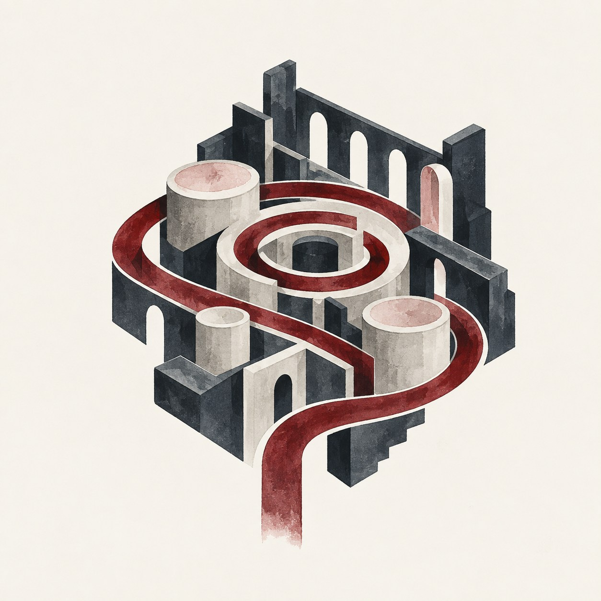
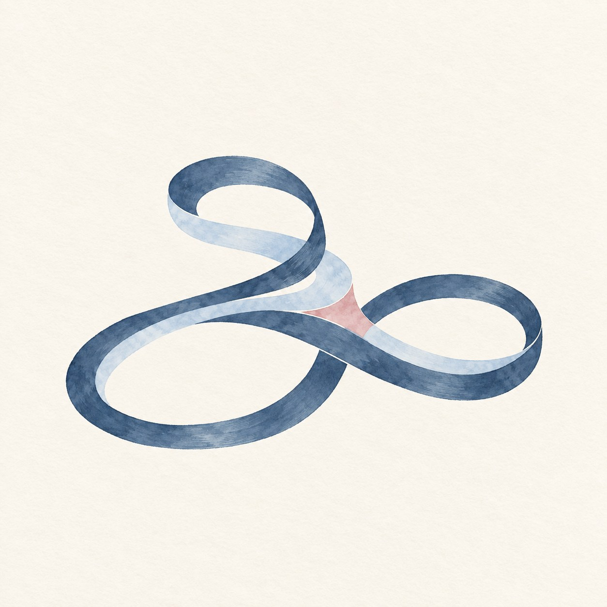
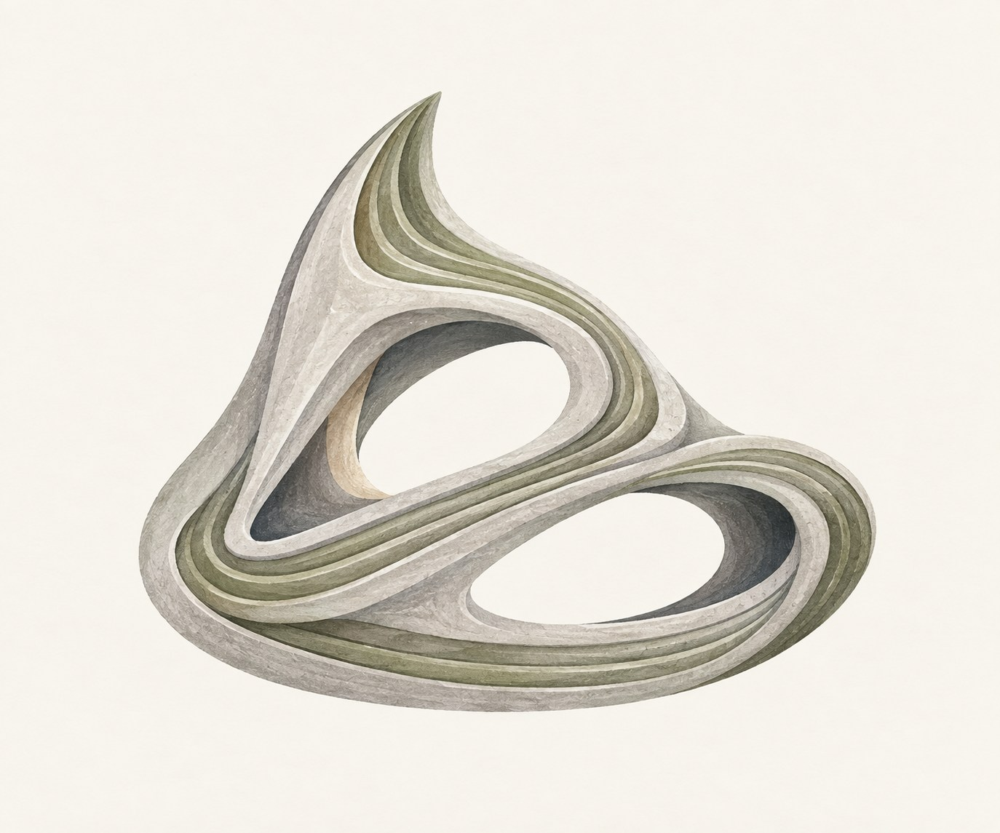
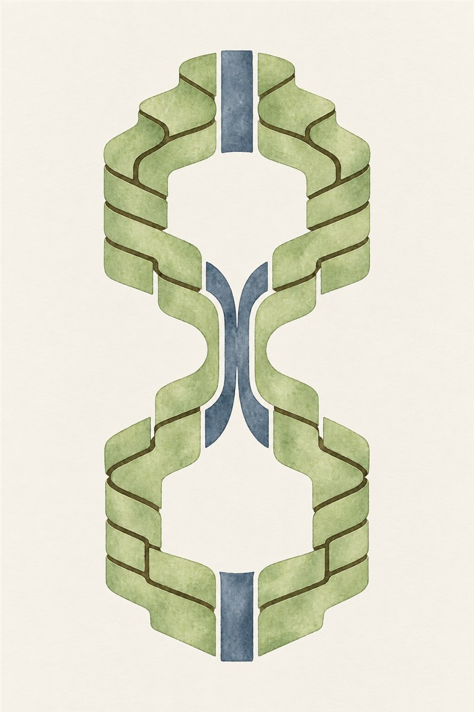

SHUYU.
CONTENT · CITIES · STORIES
Portfolio / 2026
About me

Shuyu Shen
About me
我关注内容如何连接人、场景与情绪，也习惯用数据验证一个故事是否真正被看见。
EDUCATION
香港大学 · 城市分析理学硕士
2026.09—2027.06
西交利物浦大学 · 建筑学工学学士
2022.09—2026.06 · 一等荣誉 · GPA 3.96/4.0
EXPERIENCE
中国移动 · 产品营销 · 2025.08—2025.09
知渔传媒 · 新媒体运营 · 2025.10—2026.09
南方科技大学 · 研究助理 · 2024.06—2024.07
SKILLS
Excel · Python · GIS · Climate Consultant
Photoshop · Illustrator · InDesign · Rhino · Grasshopper · AutoCAD · SketchUp
INTERESTS
摄影 · 钢琴 · 徒步旅行 · 健身训练
Project






Balance Between Emotion
Sacred Spaces of Spiritual Healing
以“平衡”为核心，将疗愈空间放入山地景观。项目借助空间序列、光线和路径，回应情绪恢复与自我重新发现的过程。
Weaving Building
Cultural Center · Regeneration Project
从南长街与古运河的丝织历史出发，以“编织”重新连接场地、城市肌理与公共生活，将文化中心嵌入旧城更新的日常路径。
Desire Factory
Narrative Architecture
一个关于欲望、规训与城市机器的叙事建筑实验。项目把社会结构转译为可拆解的系统，以强烈的黑红视觉构建未来城市寓言。
Loop in Motion
Gymnasium
以连续运动环路组织体育中心，将分散的人流、功能与滨水开放空间编织成多层循环系统，并结合被动式环境策略提升可持续表现。
OUROBOROS
3D-printed concrete pavilion
将 BIM、数字制造与结构分析结合，设计一座供人停留与放松的亭子。项目从蝙蝠翼与海浪的形态特征出发，通过曲面演化、构件拆分、Karamba 结构分析与实体模型验证，呈现 3D 混凝土打印的建造潜力。
Climate-Adaptive Housing
High-density residential typologies
以南北向线性住宅为基础，比较重庆湿热气候与哈尔滨严寒气候下的体量、朝向、采光和通风表现，并通过单元重组、围合方式与立面调整形成具有地域适应性的高密度住宅原型。
抖音、小红书个人账号
独立内容运营
独立管理抖音和小红书的全部内容生命周期，包括话题选择、内容创作、发布及账号维护；根据受众互动情况和反馈持续迭代内容主题与呈现形式。
新媒体运营
知渔传媒
参与短视频账号运营，完成20多个脚本，涵盖选题、内容策划和文案撰写；根据不同传播目标和短视频形式开发内容创意与脚本结构，并支持内容从创意构思到最终交付。
产品营销
中国移动
每日与200多名客户互动，识别用户需求并传达相关产品方案；从推广策划到现场执行，支持线上及线下营销活动。
环境与气候数据分析
南方科技大学
应用 Climate Consultant 和气候数据集分析环境状况，为沿海城市设计优化提供分析依据。
Others
Photography
城市、建筑与自然的片段。点击任意照片可查看完整画面。